Nuovi materiali
Qui compaiono per prime le mie schede più recenti. L'elenco si aggiorna automaticamente.
48 materiali
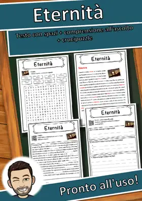
Eternità – Scheda: testo con spazi vuoti, comprensione all'ascolto e crucipuzzle
Essere umano – Scheda: testo con spazi vuoti, comprensione all'ascolto e crucipuzzle
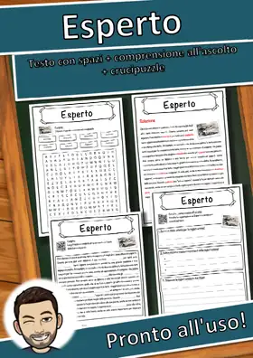
Esperto – Scheda: testo con spazi vuoti, comprensione all'ascolto e crucipuzzle
Esilio – Scheda: testo con spazi vuoti, comprensione all'ascolto e crucipuzzle
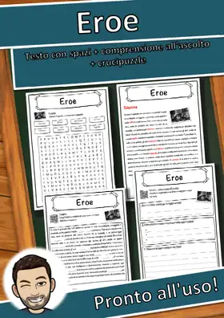
Eroe – Scheda: testo con spazi vuoti, comprensione all'ascolto e crucipuzzle
Erithacus rubecula – Scheda: testo con spazi vuoti, comprensione all'ascolto e crucipuzzle
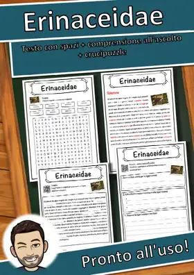
Erinaceidae – Scheda: testo con spazi vuoti, comprensione all'ascolto e crucipuzzle
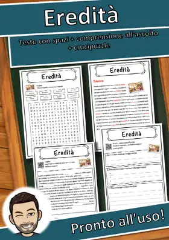
Eredità – Scheda: testo con spazi vuoti, comprensione all'ascolto e crucipuzzle
Empatia – Scheda: testo con spazi vuoti, comprensione all'ascolto e crucipuzzle
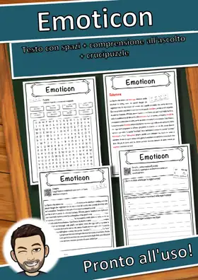
Emoticon – Scheda: testo con spazi vuoti, comprensione all'ascolto e crucipuzzle
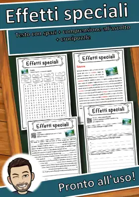
Effetti speciali – Scheda: testo con spazi vuoti, comprensione all'ascolto e crucipuzzle
Eco – Scheda: testo con spazi vuoti, comprensione all'ascolto e crucipuzzle
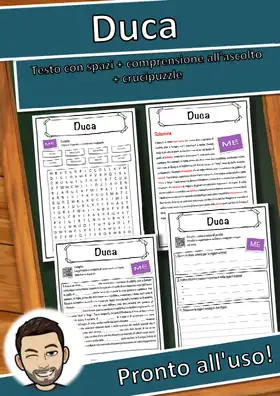
Duca – Scheda: testo con spazi vuoti, comprensione all'ascolto e crucipuzzle
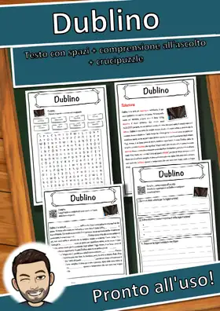
Dublino – Scheda: testo con spazi vuoti, comprensione all'ascolto e crucipuzzle
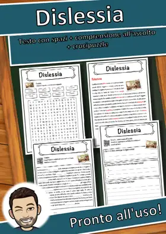
Dislessia – Scheda: testo con spazi vuoti, comprensione all'ascolto e crucipuzzle
Disco di Nebra – Scheda: testo con spazi vuoti, comprensione all'ascolto e crucipuzzle
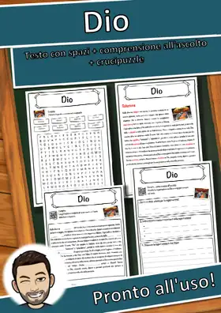
Dio – Scheda: testo con spazi vuoti, comprensione all'ascolto e crucipuzzle
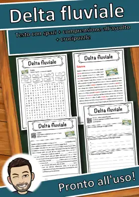
Delta fluviale – Scheda: testo con spazi vuoti, comprensione all'ascolto e crucipuzzle
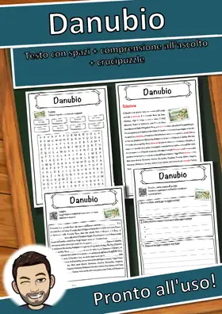
Danubio – Scheda: testo con spazi vuoti, comprensione all'ascolto e crucipuzzle
Bianco e nero – Scheda: testo con spazi vuoti, comprensione all'ascolto e crucipuzzle
Cremona
Cremona – Scheda: testo con spazi vuoti, comprensione all'ascolto e crucipuzzle
Caserta
Caserta – Scheda: testo con spazi vuoti, comprensione all'ascolto e crucipuzzle
Ragusa
Ragusa – Scheda: testo con spazi vuoti, comprensione all'ascolto e crucipuzzle
Asti
Asti – Scheda: testo con spazi vuoti, comprensione all'ascolto e crucipuzzle
Casoria
Casoria – Scheda: testo con spazi vuoti, comprensione all'ascolto e crucipuzzle
Corigliano-Rossano
Corigliano-Rossano – Scheda: testo con spazi vuoti, ascolto e crucipuzzle
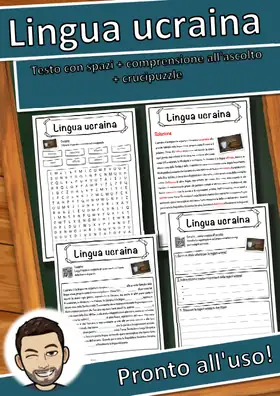
Lingua ucraina – Scheda: testo con spazi vuoti, comprensione all'ascolto e crucipuzzle
Lingua russa – Scheda: testo con spazi vuoti, comprensione all'ascolto e crucipuzzle
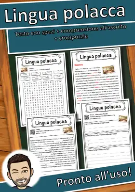
Lingua polacca – Scheda: testo con spazi vuoti, comprensione all'ascolto e crucipuzzle
Lingua latina – Scheda: testo con spazi vuoti, comprensione all'ascolto e crucipuzzle
Licantropo – Scheda: testo con spazi vuoti, comprensione all'ascolto e crucipuzzle
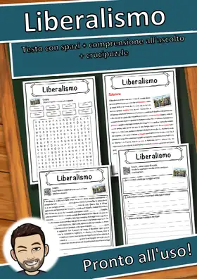
Liberalismo – Scheda: testo con spazi vuoti, comprensione all'ascolto e crucipuzzle

Le mille e una notte – Scheda: testo con spazi vuoti, comprensione all'ascolto e crucipuzzle

Lavorazione della ceramica – Scheda: testo con spazi vuoti, comprensione all'ascolto e crucipuzzle

Laurenzio – Scheda: testo con spazi vuoti, comprensione all'ascolto e crucipuzzle

Lantanio – Scheda: testo con spazi vuoti, comprensione all'ascolto e crucipuzzle

Lago salato – Scheda: testo con spazi vuoti, comprensione all'ascolto e crucipuzzle

Lago di Garda – Scheda: testo con spazi vuoti, comprensione all'ascolto e crucipuzzle

Krebs – Scheda: testo con spazi vuoti, comprensione all'ascolto e crucipuzzle

Kiefer – Scheda: testo con spazi vuoti, comprensione all'ascolto e crucipuzzle

Kazakistan – Scheda: testo con spazi vuoti, comprensione all'ascolto e crucipuzzle

Jeremias Gotthelf – Scheda: testo con spazi vuoti, comprensione all'ascolto e crucipuzzle

Ittrio – Scheda: testo con spazi vuoti, comprensione all'ascolto e crucipuzzle

Itterbio – Scheda: testo con spazi vuoti, comprensione all'ascolto e crucipuzzle

Istinto – Scheda: testo con spazi vuoti, comprensione all'ascolto e crucipuzzle

Ironia – Scheda: testo con spazi vuoti, comprensione all'ascolto e crucipuzzle
Ipersensibilità - Scheda - testo con spazi vuoti, comprensione all'ascolto e crucipuzzle
Inventore - Scheda - testo con spazi vuoti, comprensione all'ascolto e crucipuzzle
Nessun materiale trovato: prova con un'altra parola o un altro filtro.